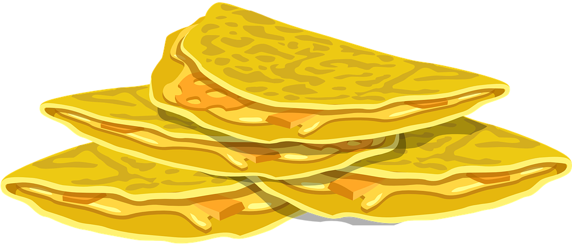

Cheese Quesadilla

Image taken from ClipArtMax.
Description
Cheese quesadillas are a quick dish that can be served up almost immediately after cooking starts. Requiring just two ingredients, a pan, a spatula, and a stovetop, both the items needed and the cleanup afterwards should not be too difficult.
Ingredients
- Flour Tortilla
- Sliced Cheese (Personal Recommendation: Cheddar)
Steps to Cook
- Set the stove to high and place an appropriately sized pan on it. Place a tortilla in the pan.
- Cook both sides of the tortilla slightly to take off any chill and prevent it from being toasted unevenly. Do not fully toast it.
- Take the sliced cheese and break it over a half of the tortilla to the amount that you desire.
- Let the cheese melt slightly, then fold the other half of the tortilla over the half that has cheese on top with a spatula.
- Once the bottom half of the tortilla is toasted to the desired amount, flip the quesadilla over to toast the other half.
- Once both sides are toasted, the tortilla should be ready to eat! If desired, the tortilla can be cut into slices with a knife or pizza cutter.